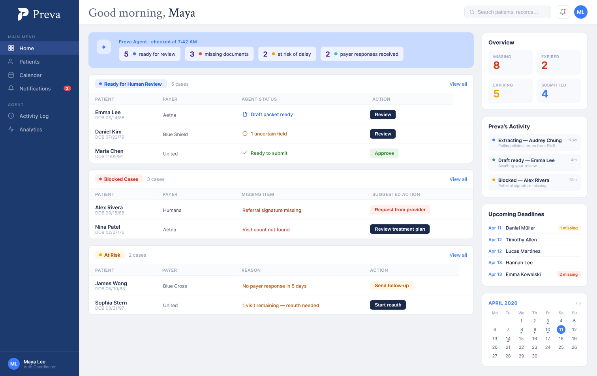
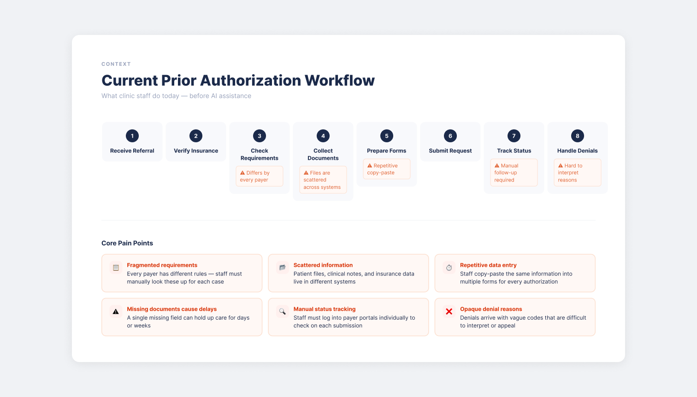
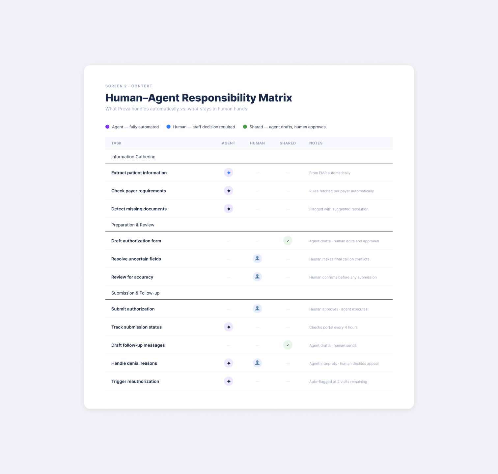
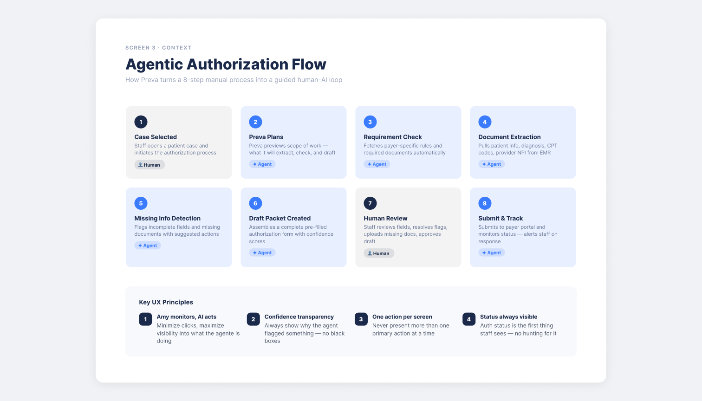
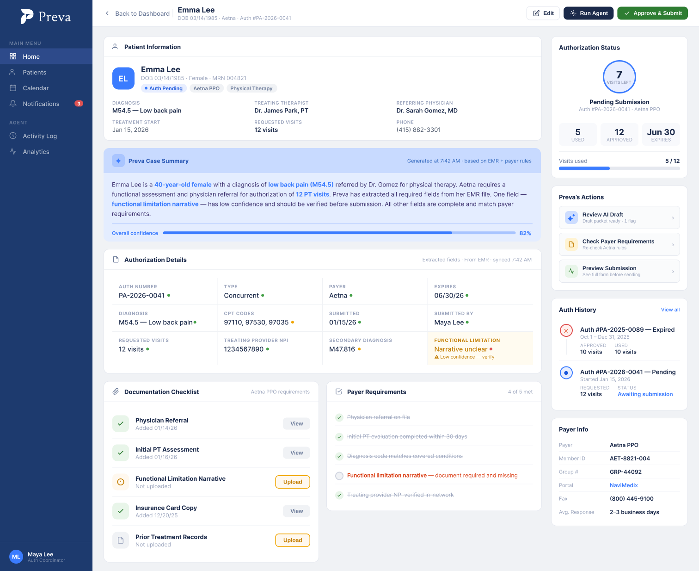
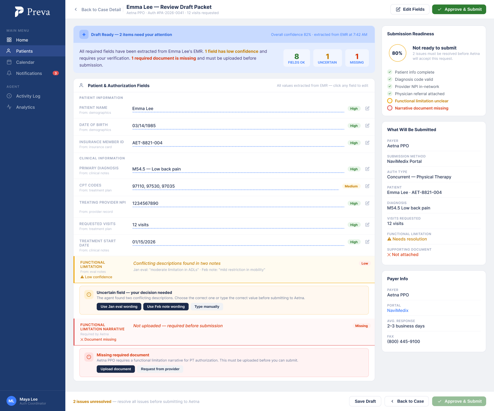
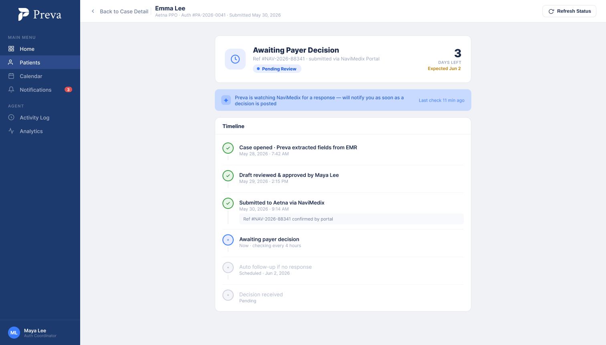
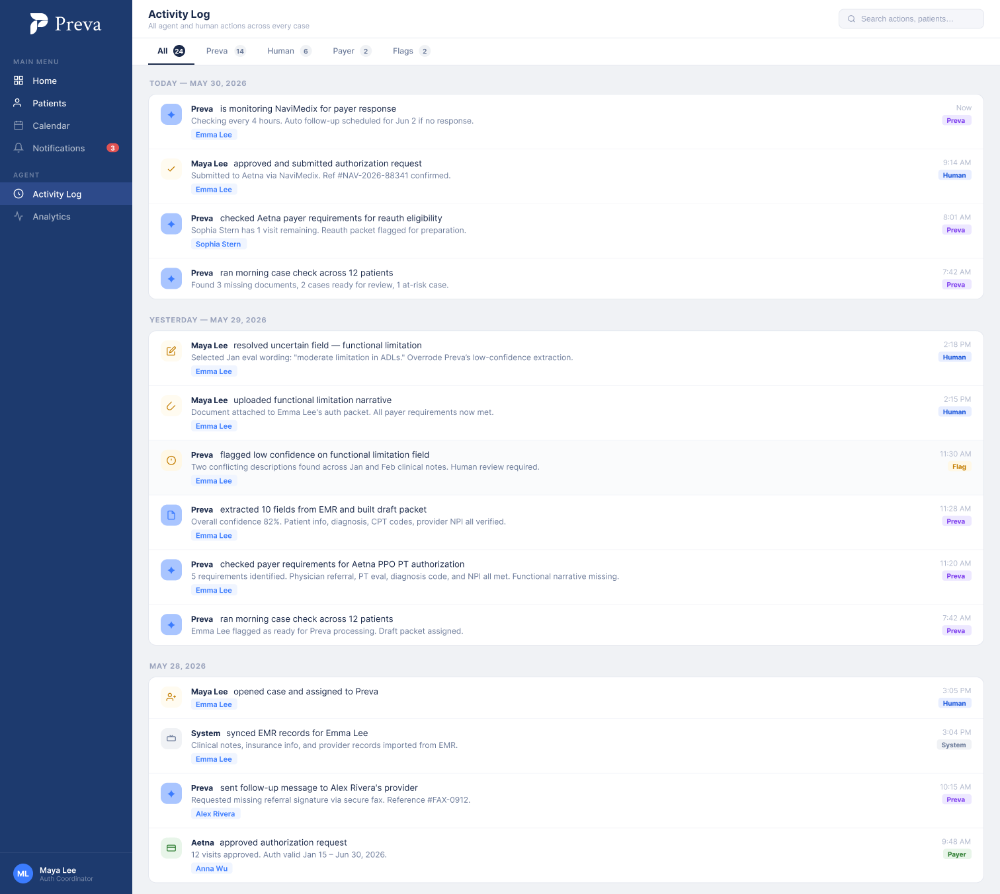

Prior authorization is one of the most time-consuming tasks in a physical therapy clinic. Staff spend hours manually collecting patient data, checking payer requirements, filling out forms, and chasing follow-ups — for every single patient, every single authorization cycle.
Every payer has different rules. Every case has documents scattered across systems. A single missing field delays care by days. And when a denial comes back, the reason is buried in codes that take expertise to decode.
The pain isn't just "filling a form." It's knowing what's required, finding the right information, and tracking dozens of incomplete cases simultaneously.
"How might we let clinic staff delegate the repetitive parts of authorization while keeping them in control of every decision that matters?"

Before designing any screen, I mapped every task in the workflow to one of three buckets: agent-owned, human-owned, or shared. In healthcare-adjacent products, this boundary matters — the AI should never submit without human approval.
This exercise surfaced the core design constraint: the agent can read, extract, check, and draft. But the human must confirm, correct uncertain fields, and approve any submission. The screens had to make that handoff feel natural — not like a burden.

The key insight was framing Preva as a goal-pursuing agent, not a smart form. The agent doesn't just fill fields — it understands what's needed, plans a sequence of actions, surfaces what it can't resolve, and hands off to the human at exactly the right moment.
The key design decision was making the agent's reasoning visible at every step — not just showing a result, but showing confidence levels, source evidence, and the exact moment where human judgment is required. Amy should always know: what is the agent doing, why, and what does it need from me?

Each screen has one job. The design avoids overloading any single view — instead each screen answers exactly one question Amy might have at that moment in the workflow.
Agent pre-sorts work by urgency. Amy opens the app and knows exactly what to do — no hunting, no filtering.
All patient, auth, and AI context in one place before Amy touches anything. The AI case summary (in Preva blue) makes clear what the agent has already understood.

The most important screen. This is where trust is built or broken — the AI shows its work (confidence scores, source evidence, flagged conflicts) and Amy decides. Every editable field has a dashed underline. Every flag has a resolution path.

The agent's job doesn't end at submission. One focused screen answers one question: where is it? No secondary panels — just status, timeline, and what the agent is watching for.

The trust layer. Every agent action is logged, timestamped, and attributed — so Amy, her manager, and compliance teams can always answer "what did the AI do, and why?"

These weren't in the brief — each one came out of a specific moment where the obvious solution turned out to be wrong.
The first dashboard was a generic table with filter tabs. The problem: "all cases" forces Amy to decide what to look at first. The agent already knows which cases are ready, blocked, or at risk — so I let it do that sorting. Amy arrives knowing exactly what needs her attention.
The first version had two columns — submission details, visits tracker, patient info, payer info. Then I asked: what does Amy actually need to know after submitting? Just one thing: where is it? I removed the right panel entirely and kept only status, timeline, and what the agent is watching for.
Early drafts flagged problems with a colored row and a badge. That's useful but incomplete — it tells Amy something is wrong without telling her what to do about it. I added inline resolve boxes beneath each flagged field with concrete next-step options.
The dashboard showed outcomes but nothing about what was happening right now. I added a live agent activity feed — what the agent is currently extracting, what just completed, what's blocked. It turns the dashboard from a static status board into a live workspace.
The most useful framework was asking: what is the cost of the agent being wrong here? That question determined every decision about when to automate, when to flag, and when to require explicit human sign-off.
What I'd build next